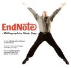

|  |
| BOOK AND SOFTWARE REVIEWS | ||||
EndNote X. Carlsbad, CA: Thomson ResearchSoft, 2006. $239.95 (£158.62, (£88.12 to students) from Adept Scientific, UK)
Thomson ResearchSoft continue to push out new versions of their bibliography management packages and a pretty rapid rate: version 9 of EndNote was reviewed here earlier in the year, although it was actually published in 2005, and now, a year later, with have version X. Quite why they suddenly switch from Arabic to Roman numerals is not clear—indeed it is not clear that it is a Roman numeral; are we going to have versions XI and XII or is it to be Y and Z?
Because there was a pretty full review of EndNote 9 only a few months ago, which also pointed to earlier reviews, this review will be a rather brief affair, focusing on the changes that have been made since the last version.
EndNote Help lists the changes as follows:
- Save your complete library (the filename.enl file as well as its associated .DATA folder and all of its contents) to a single compressed file in order to easily back up your library or send a copy to a colleague. See Saving a Compressed Copy of a Library.
- Let EndNote manage your PDF files and create links automatically by simply dragging and dropping a PDF file onto an EndNote reference. Link to PDF files in their original locations (absolute paths), or link to copies saved with your library (relative paths) for easy portability. See Selecting a Relative Path or an Absolute Path for Link to PDF.
- View the contents of up to eight different fields in the reference list display. See Display Fields Preferences.
- Use Hide Empty Fields for references displayed in the Reference window, to reduce time spent scrolling through a reference. Display all fields with Show Empty Fields. See The Reference Window.
- Easily find and select reference types from an alphabetized list.
- Use four new reference types: Ancient Text, Dictionary, Encyclopedia, and Grant. Electronic Source is renamed Web Page.
- Use additional comparison operators for searching: "field begins with," "field ends with," and "word begins with." See Using Comparison Operators.
- Use new and updated import filters, connection files and output styles.
Probably the most useful of these, from the point of view of the typical user, is the ability to manage .pdf files. This doesn't accomplish as much as one might hope: it is simply a way of linking a .pdf file to an existing reference by dragging and dropping the filename from the directory in which file is located to the 'Link to PDF' field in the record. Thereafter, when you click on the pdf icon, the application will be launched and the file pulled in. If you are starting an EndNote library from scratch, this will be very useful. If, like me, you have several libraries with references to pdf files, locating the files and the references (and then discovering that you don't have entries for all of the files!) can be a tedious business.
Another useful change is that you can not hide unused fields in the Reference view: previously, when you clicked on an individual entry in the library, the Reference view showed all of the fields and you had to scroll down to view, say, the abstract field. Now you simply click on 'Hide empty fields', and they are hidden, making the location of fields you have filled in much easier.
This doesn't go quite as far as I would like: I would prefer to be able to vary the sequence of fields, so that those I customarily fill in for any given document type can be arranged so that they appear in the sequence in which I would normally enter them into a bibliographic reference. The fields for Journal Article are almost as I want them: Author, Year, Title, Journal, Volume, Issue, Pages, but then Date and Accession Number intervene before Keywords and Abstract. I'd like to be able to move these up and consign Accession Number, which I never use, to the end of the list.
Another small grouse concerns diacritics: with names like Bødker and Engeström in my EndNote library (and there are many more names with accents of one kind or another). All that EndNote Help offers is:
- Type the character on the keyboard (if the character is part of the language supported by the keyboard).
- Copy the character from another Windows program, and paste it into your EndNote library.
- Use the Character Map program supplied with Windows for this purpose.
When other software packages can include a 'special characters' table, why not EndNote?
A small change that is welcome, is the alphabetization of the reference type list: finding a particular reference type was always a bit of a hit and miss affair - sometimes I just gave up and used Journal Article! Now, however, they are easy to find and I think that Conference Paper is new, although it isn't listed as such. In previous versions I could only find Conference but perhaps I simply couldn't find Conference Paper in the previously unorganized list, or it may have passed my notice as an added type in an earlier version. One question: why aren't the other drop-down menus one finds alphabetized?
EndNote now has thirty-eight specific reference types, one 'generic' type and three unused. I assumed that the 'unused' types could be modified to create a new type, but this is not the case. When you try to do this, the Insert Field button gives a drop down list, but that list excludes all of the the fields used in the named reference types. Strange! What's the point of having 'unused' types, if they can't be modified for use?
I found the new Encyclopedia reference type a trifle confusing, because what I usually need is an encyclopedia article type. I thought I could use Encyclopedia for that purpose, but it turned out not to be the case. In order to use it for and encyclopedia article, I would have to modify the list of fields. Why encyclopedia should deserve a separate type when it can be entered simply as a book, I don't know. However, I modified the reference type so that I can use it for encyclopedia articles, such as:
Anon. (2006). Activity theory. In Wikipedia. [Retrieved from http://en.wikipedia.org/activity_theory.html]
I'm not sure what benefit there might be from having eight fields displayed in the reference list display - I find that Author, Date, Title, and Journal title, serve me well enough and I can't figure out what I would add that would be appropriate for the majorit of items. 'Abstract' perhaps: but that's too big: even when the window is expanded to fill the screen and the other fields are adjusted to give maximum space for the abstract, one still only sees a fraction of the total.
No bibliography manager is perfect and when it comes to creating reference lists for papers the results depend crucially upon having entered all of the necessary data and having used the appropriate style (e.g., APA 5th ed., or whatever the journal you are submitting to requires) and, even then, I find that I always have to edit some of the entries to make them conform absolutely. However, programs such as EndNote (and pretty well all of them are published by Thomson these days!) can you save you an enormous amount of time if you have done all the tedious work of trawling the databases and downloading your searches.
This version of EndNote has some useful changes, but it is beginning to be a bit like the Russian pole-vaulter who always kept a little in reserve so that he could beat the world record yet again at the next games—it did wonders for his appearance fees!
Professor T.D. Wilson
Editor-in-Chief
September 2006
How to cite this review
Wilson, T.D. (2006). Review of: EndNote X. Carlsbad, CA: Thomson ResearchSoft, 2006. Information Research, 12(1), review no. SR23 [Available at: http://informationr.net/ir/reviews/sofrev23/sofrev23.html]